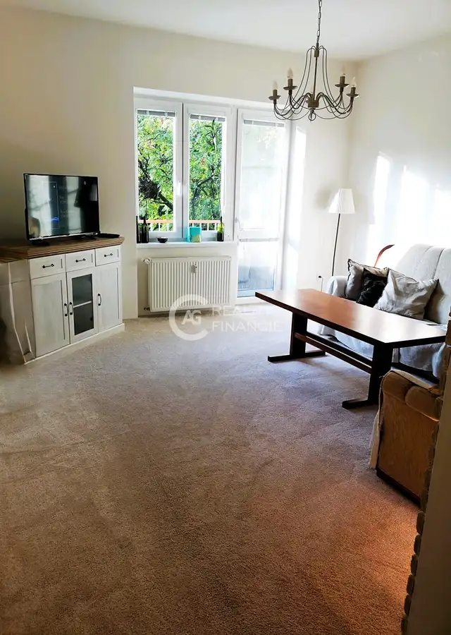
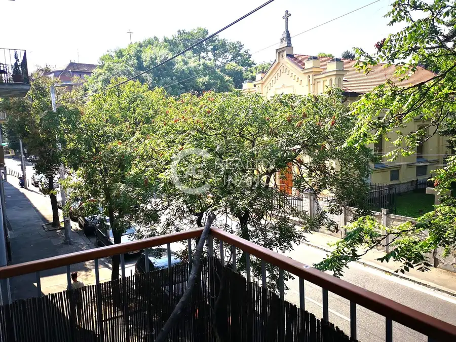
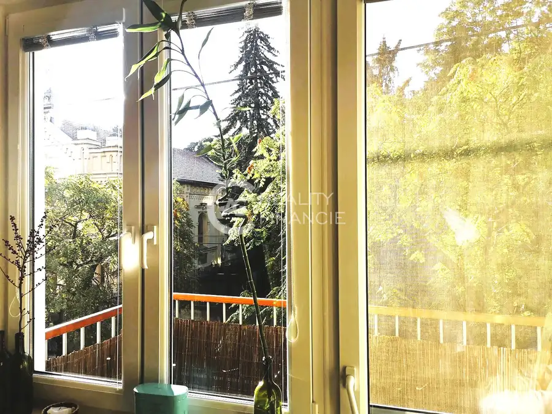

Ag reality i na prenájom kompletne zariadený 2I. byt na Palisádoch v Bratislave
Staré Mesto, Bratislava




- Dispozícia2-izbový
- Plocha62 m²
- Poschodie1. z 4
- StavČiastočná rekonštrukcia
- VlastníctvoOsobné
O nehnuteľnosti
AG reality & finance, s.r.o Vám ponúka exkluzívne na prenájom kompletne zariadený 2i. byt na adrese Palisády 10, v Bratislave- Staré Mesto.Táto lokalita Vám ponúka kompletnú občiansku vybavenosť s dostupnosťou MHD, obchodov, reštaurácií, či kaviarní, len na skok od historického centra hlavného mesta.NA PRENÁJOM:Kompletne zariadený 2-izbový byt s balkónom, voľný na bývanie od 10.10.2026.VÝMERA: 62 m2 POSCHODIE:Byt sa nachádza na 1. z 4 poschodí, bez výťahu. DISPOZIČNÉ RIEŠENIE:Po vstupe do bytu sa nachádzate na chodbe, z ktorej máte priamy vstup do kúpeľne so sprchovým kútom, do spálne, do obývacej miestnosti a do kuchyne s jedálenskou časťou. Z obývačky máte priamy vstup na balkón. V obývačke sa nachádza skrinka pod televízor, sedačka a konferenčný stolík. Kuchynský kút disponuje kuchynskou linkou, sporákom s digestorom, chladničkou s mrazničkou a so samostatným jedálenským stolom. V spálni sa nachádza manželská posteľ s veľkou šatníkovou skriňou.BYT:Pozostáva z 2och obytných miestností s balkónom, vstupného priestoru, kuchyne, obývacej miestnosti, spálne a WC spojené s kúpeľňou.VYBAVENIE:Byt sa prenajíma kompletne zariadený.PARKOVANIE:Voľné parkovanie v okolitých uličkách. LOKALITA:Byt sa nachádza v časti Bratislava- Staré Mesto odkiaľ máte v pešej dostupnosti zastávky MHD, vďaka ktorým sa dostanete takmer kamkoľvek v Bratislave. V blízkosti sa nachádza veľké množstvo reštaurácií, bistier, kaviarní a obchodov. V okolí sa nachádza Bratislavský hrad, Slavín, Horský park a byt je len kúsok od historického centra Bratislavy.CENA:900 EUR/mes. nájom za byt (vrátane poplatkov, energií, TV, internetu- 450€ nájom, 450€ energie). Pri podpise nájomnej zmluvy sa hradí: 1X nájom za daný mesiac, 1X depozit vo výške mesačného nájmu a provízia RK vo výške 600€.KONTAKT:Mgr. Veronika Gašpariková, tel. č.: 0901 727 778,email: veronika.gasparikova@agreality.skFotografie a text sú autorským dielom a majetkom spoločnosti AG reality&finance, s.r.o
Parametre
- Cena vrátane energií
- Nie
- Druh
- 2 izbový byt
- Dátum zverejnenia
- 04. 09. 2026
- Orientácia
- Juhovýchodná
- Plocha balkónu v m2
- 2 m²
- Podlažie
- 1
- Počet balkónov
- 1
- Počet izieb / miestností
- 2
- Počet nadzemných podlaží
- 4
- Rok výstavby
- 1930
- Stav nehnuteľnosti
- Čiastočná rekonštrukcia
- Telekomunikácie
- Internet, Optická sieť
- Typ
- Prenájom
- Typ konštrukcie
- Tehlová
- Vlastníctvo
- Osobné
- Vybavenie
- Balkón, Verejné parkovanie
- Vykurovanie
- Lokálne
- Zariadenie
- Zariadené kompletne
- Úžitková plocha
- 62 m²
Kde to je


Mohlo by Vás zaujímať
 PozemokNové
139 000 €AG Reality I na predaj tri slnečné stavebné pozemky - Zálesie
Zálesie
605 m²
PozemokNové
139 000 €AG Reality I na predaj tri slnečné stavebné pozemky - Zálesie
Zálesie
605 m²
 DomNové
349 900 €Ag reality i na predaj samostatné rod.domy 4 izb- Miloslavov
Miloslavov
135 m²
DomNové
349 900 €Ag reality i na predaj samostatné rod.domy 4 izb- Miloslavov
Miloslavov
135 m²
 BytNové
226 000 €Ag Reality i na predaj útulný 3 izb.byt v Dunajskej Lužnej - vodárenská ul.
Dunajská Lužná
3-izbový71 m²
BytNové
226 000 €Ag Reality i na predaj útulný 3 izb.byt v Dunajskej Lužnej - vodárenská ul.
Dunajská Lužná
3-izbový71 m²